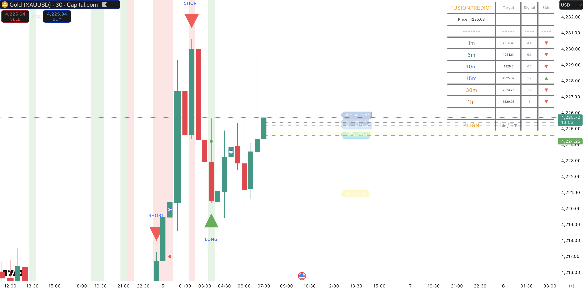

FusionPredict Technology
FusionPredict runs a multi-timeframe forward-modeling engine tuned for scalpers, intraday traders, and structured swing traders.
Projection Intervals
- 1m — microstructure & scalp entries
- 5m — core engine with highest precision
- 10m — flow stabilization interval
- 15m — directional confirmation
- 30m — momentum context
- 1h — macro structural pressure
Why Scalpers Choose FusionPredict
- ✔ Ultra-tight continuation & pullback entries
- ✔ Fewer liquidity stop-outs
- ✔ Early reversal detection
- ✔ Works with OBs, FVGs, CHoCH/BOS
- ✔ Optimized for high-frequency, low-risk execution
Accuracy Expectations
Stable-regime backtesting shows up to 97% projection accuracy on 5-minute intervals.
High-volatility events may temporarily sweep liquidity before reverting toward the predicted level.

 Request Invite
Request Invite